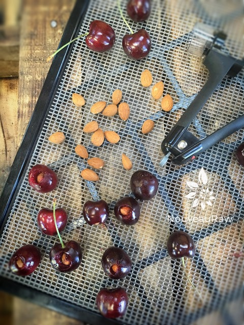
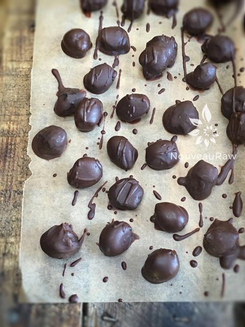

Almond Cherry Relleno

~ raw, vegan, gluten-free ~
Before we dive into this recipe, let’s talk pheromones, yes you heard me right… pheromones!
Pheromones are chemicals secreted by the body that may influence the behavior of those of the same species. Research shows each person produces pheromones with a unique chemical formula. But did you know there are certain foods such as chocolate that can mimic human pheromones?
Chocolate, especially dark chocolate, contains a pheromone that has been linked to feelings of happiness and good moods. Chocolate contains phenylethylamine, a stimulant that causes a sense of excitement and well-being. According to CBS News, the pheromone in chocolate is similar to the hormone dopamine. This is perhaps the reason so many people eat chocolate when they are stressed or worried.
I will be very honest here; I am not a strong chocolate lover. Don’t get me wrong, I enjoy chocolate but if you were to set a bowl of fresh cherries and a bowl of chocolates in front of me… the cherries would be gone in no time flat. Chocolate just doesn’t tempt me. My grandmother on the hand, well shoot, I have witnessed her down a box of chocolate-covered cherries in one sitting. A big box, all by herself! And trust me, she is an itty bitty thing. I don’t know how she does it.
So, there is science behind chocolate, but who really cares, right? What we care about right now is making these lovely morsels and devouring them! For this recipe, I used store-bought, organic, gluten-free, dairy-free, corn-free, soy-free, free-trade, vegan chocolate chips (well that was a mouthful!). I get many emails from readers who have a hard time getting their hands on raw cacao powder, so I wanted to test it out using store-bought chocolate. That way I can help those of you out there who can’t readily obtain raw cacao. For those of you who wish to make this with raw chocolate, you can do so… Ok, let’s get busy.
Preparation:
- Wash, remove the stems and pits from the cherries.
- After soaking and removing the skins of the almonds, stuff an almond into each cherry. Place the stuffed cherry on the mesh sheet that comes with the dehydrator.
- Dehydrate at 145 degrees (F) for 1 hour, then reduce the temperature to 115 degrees (F) and continue to dry for approximately 24 hours or until dry. Remove and allow them to cool to room temperature.
- If making this raw – Prepare the hardening chocolate recipe
- If using store-bought chocolate chips –
- Melt in a double boiler – Bring the water to a simmer, pour the bag of chocolate chips into your double boiler. Stir constantly, once most of the chocolate chips are melted reduce the heat to the lowest setting. Continue stirring until all of the chocolate is melted. Be careful that you don’t allow any moisture into the pan; this will cause your chocolate to seize. Once melted, turn the heat off and start dipping your cherries.
- Dip each dried, stuffed cherry into the chocolate, coating it well, tap off the excess chocolate.
- I use a small fork as a platform to hold the cherry, tap it on the side of the bowl, scrape the bottom of the fork with the edge of the spatula, and slide the cherry onto the tray with a toothpick.
- Place on a solid surface (etc. cutting board, tray, teflex sheet, wax paper).
- Allow the chocolate to harden. Place them in a cool spot of the house to harden.
- Store in an airtight container.
Culinary Explanations:
- Why do I start the dehydrator at 145 degrees (F)? Click (here) to learn the reason behind this.
- When working with fresh ingredients, it is important to taste test as you build a recipe. Learn why (here).
- Don’t own a dehydrator? Learn how to use your oven (here). I do however truly believe that it is a worthwhile investment. Click (here) to learn what I use.

Remove the pits from each cherry and stuff an almond inside. Place it on the mesh sheet that comes with the dehydrator and dehydrate. Once done, dip in chocolate and EAT!

© AmieSue.com